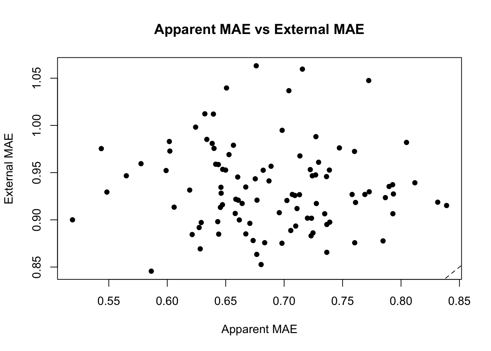
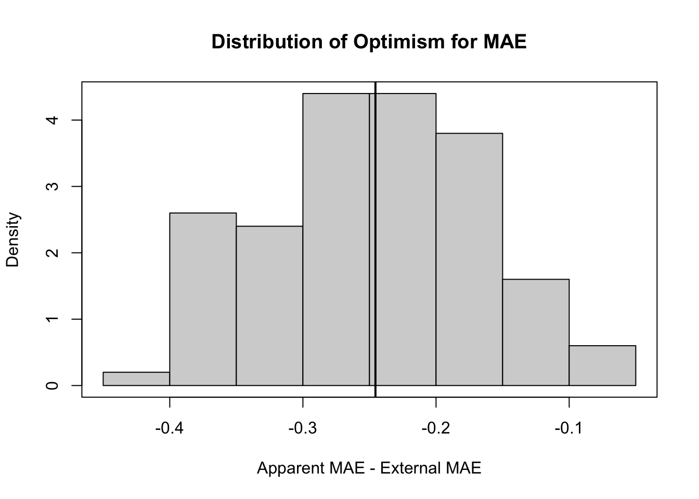

pak::pak("thomasgstewart/ds6021d")✔ Updated metadata database: 7.65 MB in 4 files.ℹ Updating metadata database✔ Updating metadata database ... done ℹ No downloads are needed✔ 1 pkg + 1 dep: kept 1 [26.3s]Internal Measures of Performance - Liane Emmim
pak::pak("thomasgstewart/ds6021d")✔ Updated metadata database: 7.65 MB in 4 files.ℹ Updating metadata database✔ Updating metadata database ... done ℹ No downloads are needed✔ 1 pkg + 1 dep: kept 1 [26.3s]require(ds6021d)Loading required package: ds6021dset.seed(2343)
v <- external_data(20000)
apparent_mae <- rep(NA, 100)
external_mae <- rep(NA, 100)
for(i in 1:100){
f <- m[[i]]
d <- td[[i]]
apparent_mae[i] <- mean(abs(f(d) - d$y))
external_mae[i] <- mean(abs(f(v) - v$y))
}
plot(apparent_mae, external_mae,
xlab = "Apparent MAE",
ylab = "External MAE",
main = "Apparent MAE vs External MAE",
pch = 16)
abline(0, 1, lty = 2)
The external MAE values are generally higher than the apparent MAE values. This means the models perform better on the data they were trained on than on new external data. The points mostly fall above the diagonal line, showing that apparent error is too optimistic.
optimism_mae <- apparent_mae - external_mae
hist(optimism_mae,
main = "Distribution of Optimism for MAE",
xlab = "Apparent MAE - External MAE",
freq = FALSE)
box()
abline(v = mean(optimism_mae), lwd = 2)
mean_optimism <- mean(optimism_mae)
mean_optimism[1] -0.2455164The mean optimism is negative because apparent MAE is usually smaller than external MAE. The distribution will likely be centered below zero. This tells us that apparent error underestimates the true prediction error, so it is not a reliable performance estimate by itself. 4.
# Q4
d <- td[[1]]
n <- nrow(d)
K <- 10
set.seed(125323)
fold_id <- sample(rep(1:K, length.out = n))
cv_mae <- rep(NA, K)
for(k in 1:K){
train <- d[fold_id != k, ]
test <- d[fold_id == k, ]
fit <- lm(y ~ ., data = train)
yhat <- predict(fit, newdata = test)
cv_mae[k] <- mean(abs(yhat - test$y))
}
cv_mae [1] 0.7766818 0.8552231 0.7280136 0.9351459 1.0203651 0.6573483 0.9602363
[8] 1.0651125 0.9377833 1.2223882mean(cv_mae)[1] 0.9158298The 10-fold CV MAE estimates performance by testing each observation on a model that was not trained on that observation. This should be more realistic than apparent MAE.
d <- td[[1]]
n <- nrow(d)
fit_full <- lm(y ~ ., data = d)
apparent_mae_full <- mean(abs(predict(fit_full) - d$y))
B <- 200
set.seed(42352)
optimism_b <- rep(NA, B)
for(b in 1:B){
idx <- sample(1:n, replace = TRUE)
boot_d <- d[idx, ]
fit_b <- lm(y ~ ., data = boot_d)
yhat_app <- predict(fit_b, newdata = boot_d)
mae_app <- mean(abs(yhat_app - boot_d$y))
yhat_orig <- predict(fit_b, newdata = d)
mae_orig <- mean(abs(yhat_orig - d$y))
optimism_b[b] <- mae_app - mae_orig
}
estimated_optimism <- mean(optimism_b)
corrected_mae <- apparent_mae_full - estimated_optimism
set.seed(2343)
v <- external_data(20000)
true_external_mae <- mean(abs(predict(fit_full, newdata = v) - v$y))
apparent_mae_full[1] 0.6767684estimated_optimism[1] -0.2098636corrected_mae[1] 0.8866319true_external_mae[1] 0.9208307The bootstrap optimism estimator adjusts the apparent MAE upward to make it closer to the external MAE. The apparent MAE is usually too low because the model was evaluated on the same data used to train it. The corrected MAE should be closer to the true external error than the apparent MAE.